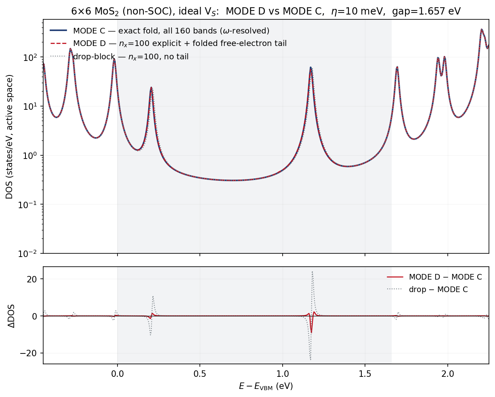
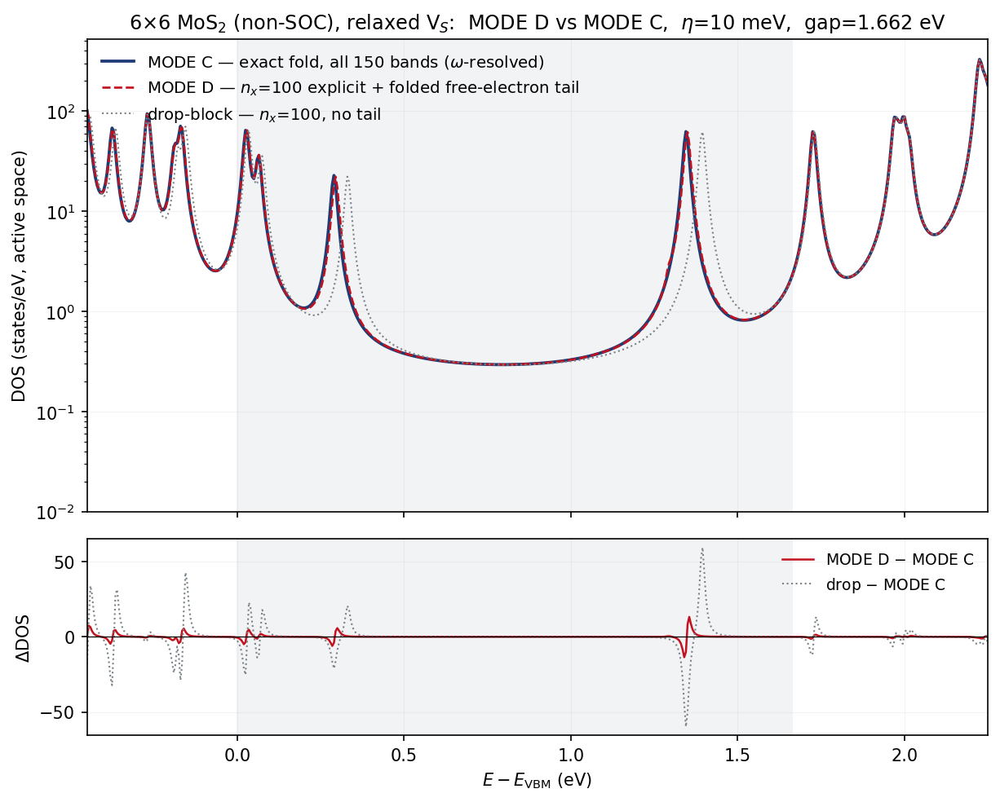
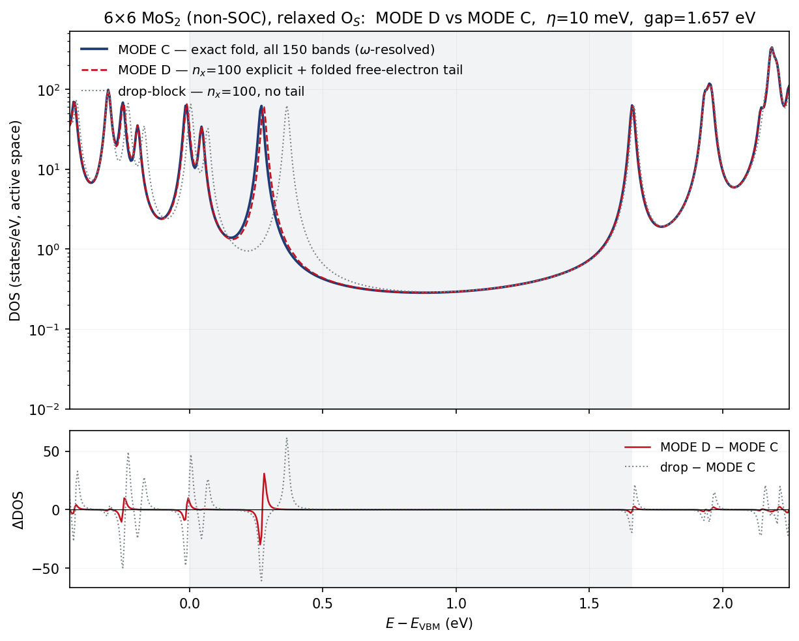
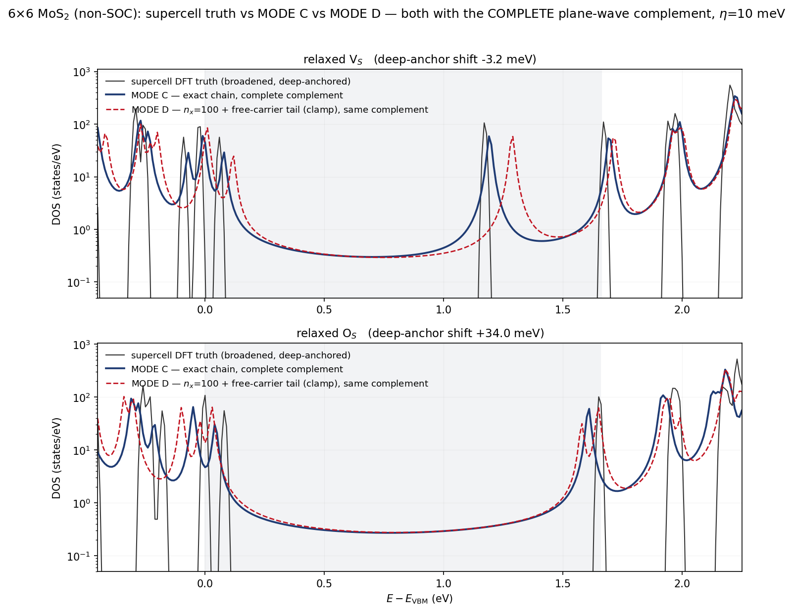

Contents
方法归属:MODE D(OPW/折叠自由电子尾部)由合作者 cz 贡献,实现于 EDI 开发仓库的
opw-tail分支(doc/opw_tail.md+post/tail_fold.py)。本页是我方在同一套数据上的 独立复现与交叉检验——即该方法笔记中列为 "still to do" 的 MODE C 对拍的第一块拼图。 本页不含任何该方法的实现代码,只报告我们自己跑出的数字。
1. 被检验的是什么
外空间的能带补全:把希尔伯特空间切成 $1 = P + K + Q$——$P$ 为活性窗口(11 带 $d+p$), $K$ 为直到 $n_x$ 的显式外空间(带真实 DFT 能量与矩阵元),$Q$ 为 $n_x$ 之上直到平面波截断的 尾部(永不枚举)。用 Schur 补把 $Q$ 精确消去:
尾部因此出现在三处:直接路径 $T_{PP}$、显式带哈密顿量的修饰 $T_{KK}$、以及 $P\!\leftrightarrow\!K$ 耦合的修饰 $T_{PK}$。近似只有两个:$G_Q$ 取平面波对角的自由电子形式 $D_G=1/(\omega-\bar V-|k_f+G|^2)$,以及每条显式带只需一个矢量 $\chi_X=\hat Q\,\Delta V|\psi_X\rangle$(其中 $\hat Q$ 只减掉已有的 $n_x$ 条显式带投影)。
对照的 MODE C 是我们的精确 $\omega$ 分辨 Feshbach 折叠(生产路径用块 Lanczos 连分式实现; 本页在同一套 160 带数据上用直接求解给出同一个目标量)。
2. 计算设置
| 项 | 值 |
|---|---|
| 体系 / 缺陷 | MoS$_2$ 单层 6×6 超胞,理想(未弛豫)S 空位 |
| 相对论 | 标量(非 SOC) |
| k 网格 | 36 k(12×12 的 stride-2 子块,精确 q,无 wrap) |
| 显式带宇宙 | 160 带;活性 $P$ = 带 7–17(396 态) |
| MODE D 划分 | $n_x=100$ → $K$ = 89 带,尾部块 = 60 带 |
| 自由电子背景 | $\bar V=-7.649$ eV(能量匹配,尾部块底 $+28.07$ eV) |
| 频率 | 全部在 $\omega+i\eta$ 求值,$\eta=10$ meV(推迟) |
| 参照 | 160 带全阶折叠($\mathrm{VBM}=-5.9365$ eV,gap $1.657$ eV) |
为什么全部走复频率:实轴求值会把窗口内每个外空间极点渲染成零宽度的针——这是我们在 谱函数管线上刚踩过并修掉的同一个坑(链式分数改在 $\omega+i\eta$ 求值)。
3. 独立复现(流水线同源确认)
用我们自己装配的数据(36k 子块切片、独立的波函数读取、独立驱动)复现该方法笔记里的 M2 自洽测试数字——间隙窗口(~20 条能级)最大误差,相对 160 带全阶折叠:
| 变体 | 本次运行 | 方法笔记 | 含义 |
|---|---|---|---|
| drop-block | 11.10 meV | 11.1 | 完全不要尾部 |
| ffree-open | 1.32 meV | 1.3 | 折叠自由电子尾部 |
| fexact | 2.79 meV | 2.8 | 折叠框架 + 精确尾部谱 |
三个数字全中。注意 fexact 比 ffree 更差:一旦耦合被折叠进去,尾部模型谱的细节 已是二阶效应——这一反直觉的结论在我们的独立复现里同样成立。
4. 自由电子能量空间的收敛性
方法笔记里唯一没有扫过的轴,也是生产端最实际的参数:尾部收缩 $T_{XY}=\sum_G \chi_X^*(G)\,D_G\,\chi_Y(G)$ 的平面波求和按动能 $|k+G|^2$ 截断后, 每条带每个 k 到底需要存多少个 $G$。
| $|k+G|^2$ 截断 | 平面波数 | 块权重 | 绝对误差 | 相对全 $G$ |
|---|---|---|---|---|
| 全集(1361 eV) | 24034 | 1.00000 | 1.315 meV | — |
| 500 eV | 5351 | 0.99990 | 1.316 | 0.000 |
| 300 eV | 2486 | 0.99885 | 1.320 | 0.007 |
| 200 eV | 1353 | 0.99497 | 1.347 | 0.048 |
| 150 eV | 878 | 0.98910 | 1.394 | 0.102 |
| 100 eV | 479 | 0.97119 | 1.663 | 0.480 |
| 75 eV | 312 | 0.93234 | 2.379 | 1.478 |
| 50 eV | 169 | 0.78137 | 5.946 | 4.631 |
| 30 eV | 80 | 0.17414 | 9.494 | 8.179 |
| 10 eV | 15 | 0.00073 | 11.061 | 9.746 |
两个读数:(i) 截断 $\to 0$ 精确回到 drop-block(11.06 vs 11.10)——内部一致性自证; (ii) 模型自身误差(1.32 meV)在约 200 eV 以上完全主导截断误差。故尾部收缩只需 ~1400–2500 个 $G$(全集的 6–10%),侧文件可压 10–17 倍,误差预算分文不动。
限制:此框架下 $\chi$ 是带投影得到的(投到第 101–160 带),其 $G$ 成分偏软;真实生产的 $\chi=\hat Q\Delta V|\psi\rangle$ 更硬。上表因此是下界,真值需要尚未实现的 Fortran $\chi$ 导出。
5. DOS 对拍

活性空间 DOS,对数轴,灰底为间隙;下panel 为相对 MODE C 的差值。
| MODE C 峰 (eV) | MODE D 位移 | drop-block 位移 | 特征 |
|---|---|---|---|
| $-0.285$ | 0.0 meV | 0.0 meV | 价带边多重态 |
| $-0.020$ | 0.0 | 0.0 | VBM 邻近对 |
| $+1.170$ | 0.0 | $+10.0$ | V$_S$ 深 $e$ 双重态 |
| $+1.695$ | 0.0 | 0.0 | 导带边 |
| $+1.940$ / $+1.980$ | 0.0 | 0.0 | 共振 |
六个峰全部落在 5 meV 的 $\omega$ 网格分辨率之内。间隙内 DOS 的 $L_1$ 误差: MODE D $0.196$ vs drop-block $1.140$ 态——折叠尾部把误差降到 $1/5.8$。差值图里 drop-block 在 $+1.17$ 处的 $\pm 23$ 双极振荡是能级移位的典型signature,而 MODE D 只剩 $\pm 8$ 的形状残差、无位移。
6. 弛豫几何:V$_S$ 与 O$_S$(第二、三个体系)
理想几何之外,再用弛豫几何的两个缺陷复核。这两套的 edmat 用当前 edi.x(v8d, 20260809 带轴约定)重算:宿主为各自的公度 6×6 NSCF save(150 带、36 k、 FFT 40×40×300,$E_{\rm cut}=50$ Ry),ΔV 取未粗化的 240×240×300 cube (公度比 6:1 ✓),pot_align='vacuum',两套设置一致。
索引约定由物理判定,不由假设。同一份矩阵有 6 种可能的索引约定,它们的 M$_{AA}$ 厄米性全部是 $3\times10^{-14}$——厄米性无法判别。判据是能级:正确 约定给出 V$_S$ 的 M-only 双重态 $+0.0337$ (2×) 与 $+0.080$(与既有的 $+0.0395$ (2×)、$+0.0858$ 逐条对应,差 ~6 meV 来自 cube/宿主/对齐的设置差), 错误约定给出无间隙的乱梯。这是本项目第三次同类教训(SU(2) 配对相位、C3 的 k 映射)。
6a. 重构误差(n_x = 100,静态 pin)
| 体系 | drop-block | ffree-open | fexact |
|---|---|---|---|
| 理想 V$_S$(160 带) | 11.10 meV | 1.32 | 2.79 |
| 弛豫 V$_S$(150 带) | 61.43 meV | 8.16 | 5.65 |
| 弛豫 O$_S$(150 带) | 98.33 meV | 8.96 | 1.92 |
弛豫体系对尾部的依赖强得多——丢掉尾部的代价从 11 meV 涨到 61–98 meV,而折叠 自由电子尾部把它压到 1/7.5–1/11。另一处反转:理想 V$_S$ 上 ffree 优于 fexact, 弛豫两套上 fexact 又占优——说明"模型谱细节是二阶效应"这一结论是体系相关的, 在耦合更强的弛豫几何里,尾部谱本身开始有一点分量。
6b. 自由电子能量空间收敛(三个体系一致)
| 截断 | 平面波 | 理想 V$_S$ | 弛豫 V$_S$ | 弛豫 O$_S$ |
|---|---|---|---|---|
| 全集 | 24034 / 8494 | 1.315 | 8.164 | 8.960 |
| 500 eV | 5351 | +0.000 | +0.001 | +0.001 |
| 300 eV | 2486 | +0.007 | +0.022 | +0.024 |
| 200 eV | 1353 | +0.048 | +0.153 | +0.161 |
| 100 eV | 479 | +0.480 | +1.630 | +1.644 |
| 截断 → 0 | — | → drop-block ✓ | → drop-block ✓ | → drop-block ✓ |
(后三列为相对全 $G$ 结果的偏差,meV。)两个读数:(i) 同一能量截断下的平面波 个数在三套里逐个相同(2486、1353、878、479……)——同一个原胞,这是几何决定 的普适数,不是某个算例的巧合;(ii) 理想那套宿主截断 100 Ry(全集 24034 个 $G$)、 弛豫两套 50 Ry(8494 个),而 300 eV 处的代价都在 0.007–0.024 meV——结论对宿主 截断不敏感。
6c. DOS 对拍


| 体系 | 峰位一致性(MODE D) | drop-block 最大位移 | 间隙 $L_1$:MODE D / drop |
|---|---|---|---|
| 理想 V$_S$ | 6/6 峰 $\le$ 5 meV | +10 meV(深双重态) | 0.196 / 1.140(×5.8) |
| 弛豫 V$_S$ | 9/9 峰 $\le$ 5 meV | +50 meV(深能级 +1.345) | 0.786 / 4.897(×6.2) |
| 弛豫 O$_S$ | 3/3 峰 = 0 meV | +5 meV;$+0.28$ 共振被推 ~90 meV | 1.055 / 4.392(×4.2) |
弛豫 O$_S$ 的差值图最能说明问题:$+0.28$ eV 那个共振在 drop-block 下被整体推到 $+0.37$(~90 meV),而 MODE D 把它放回原位,只留下峰形残差。
不要把这组数字与既往发表值并列:本节重算用的是未粗化 cube + 50 Ry 宿主 + vacuum 对齐,弛豫 V$_S$ 的深能级 $\omega$ 分辨值落在 $+1.345$,而既往发表的 MODE C 值是 $+1.1985$——~145 meV 的差来自设置,不是 MODE D 的误差。本页所有 对比都在各自数据内自洽:MODE C 与 MODE D 吃的是同一份矩阵、同一套本征值。
6d. 幽灵态阶梯:MODE D 过了幻影门
缺陷下折叠里最容易被误判的对象是中间隙的假态。历史上有三个不同的东西常被混为一谈, 这里用新数据把它们分开(静态 pin,中间隙窗口 $0.15$–$1.55$ eV):
| 外空间处理 | 阶数 / 带数 | V$_S$ 中间隙 | O$_S$ 中间隙 |
|---|---|---|---|
| M-only | 无外空间 | EMPTY | $+0.8062$ (2×) ← O-2p 上推幽灵 |
| bare(二阶,全外空间) | 2nd / 139 | $+0.7031$, $+0.7034$ ← Born 伪对 | EMPTY |
| bare(二阶,仅 keep) | 2nd / 89 | $+0.8856$, $+0.8862$ | EMPTY |
| drop-block | 全阶 / 89 | $+0.4763$, $+1.4165$ (2×) | $+0.3731$ (2×) |
| MODE D(ffree) | 全阶 89 + 解析尾部 | $+0.4230$, $+1.3721$ (2×) | $+0.2837$, $+0.2845$ |
| 全阶参照 | 全阶 / 139 | $+0.4149$, $+1.3684$ (2×) | $+0.2748$, $+0.2757$ |
三件不同的事:(i) O$_S$ 的 O-2p 幽灵 $+0.806$ (2×) 只活在 M-only 里(既有记录 $+0.801$ (2×)),二阶修饰就足以杀死它($+0.0296$ (2×)/$+0.0401$,既有记录 $+0.025$ (2×)/$+0.035$——两条独立复现);(ii) V$_S$ 的 $+0.703$ 伪对是二阶截断本身的 产物(既有记录 bare-150 $+0.7112$ (2×)),全阶折叠一出现就消失;(iii) 因此 drop-block 没有幽灵是正确行为,它并不是"显式求和"——它对 89 条带做的是全阶折叠。
幻影门的分量在于它不是平凡的:MODE B 用 6 级 deflated ladder 修饰整个外空间,阶数够高, 却因为基底张不开一个慢模而把幽灵留住了($+0.807$)。MODE D 用的是完全不同的近似, 结果站在 MODE C 一边:两个体系的中间隙态都跟随全阶参照,偏差 3.7–8.8 meV,而 drop-block 偏 48–98 meV。
一处未决分歧(如实记录):本节这份新算的弛豫 O$_S$,其全阶参照在 $+0.275$ 有一个近简并对,而既有表格里弛豫 O$_S$ 的超胞真值与 MODE C 都是"中间隙空"。 同一份数据的 M-only 与 bare 二阶都与既有值吻合到 5 meV,分歧只在"全阶"这一步出现。 候选原因:静态 pin vs $\omega$ 自洽(但 $\omega$ 分辨 DOS 里 $+0.28$ 的峰仍在)、 既有 O$_S$ MODE C 用的是 36 步链而 O$_S$ 恰是 MODE B/C 唯一分歧的体系 ($\lVert\Delta\Sigma\rVert=0.68$ Ry)、以及
pot_align等设置差。待判:用新数据跑 一条更长的生产链(块 Lanczos)可同时判定"中间隙空不空"与"36 步够不够"。
6e. 完整补空间:MODE D vs MODE C vs 超胞真值
前面所有 MODE D 数字都在 M2 自洽框架里:尾部 $Q$ 是 $(n_x,150]$ 的带块,$\chi$ 由带投影 造出。生产形态不同——$Q$ 是直到平面波截断的真补空间,$\chi=\hat Q\Delta V|\psi_X\rangle$ 必须由 Fortran 侧导出。我们把这块补上了(EDT 新增 chi_dump_raw:批量植入 bands $1..n_x$ 的 全部 $(n,k)$ 源,走与链完全相同的 apply_dV 路径,故 KB 非局域项精确;流式写出原始 $\Delta V|\psi_X\rangle$ 与 $|k_f+G|^2$、显式带系数,投影深度留作后处理旋钮)。
这是第一次 MODE C 与 MODE D 的外空间是同一个东西:生产链的 Krylov 矢量本就活在 完整平面波补空间里(project_PA 只减活性带),而现在 MODE D 的尾部也是同一个补空间。 两侧宿主、cube、pot_align 逐项相同。
三道门:导出 vs edmat 7.8e-16 / 1.3e-15 Ry(错误索引取向 0.29/0.50,判据有效); 显式带系数范数 1.000000;尾部权重 $\|\chi\|^2/\|\Delta V\psi\|^2$ = 0.668(V$_S$)/ 0.813(O$_S$)——即 100 条显式带之外还占着 2/3 到 4/5 的权重。
尾部变体在生产里换人。M2 框架下 ffree-open 全面最优;完整补空间下它却留下 open-mode 假极点——自由电子阶梯从 $\bar V\approx-10$ eV 起,而 $Q$ 的真实底部在 $+28$ eV,低 $|k_f+G|^2$ 的标签是虚构态且分母符号相反:
| 变体 | O$_S$ 中间隙 | V$_S$ 深双重态 |
|---|---|---|
open(照抄公式) | $+0.2150$(假态) | $+1.3228$ (2×) |
clamp(下限钉在 $Q$ 底部) | 空 ✓ | $+1.3089$ (2×) |
sapofix(SAPO 投影能量) | $+0.8512$(更糟) | $+1.3085/+1.3096$ |
sapofix 在生产里数值失稳:$p_G$ 最大到 0.998,$1/(1-p_G)$ 把某些 $G$ 的有效能量甩到 $-4294$ eV(M2 里 $Q$ 是窄块所以温和)。实现层面需要护栏。V$_S$ 上 clamp 与 sapofix 吻合到 0.4–1 meV,说明该体系的尾部已进入模型无关区;O$_S$ 上两者仍分歧,说明它更敏感。

| 峰位 (eV) | V$_S$ 真值 | V$_S$ MODE C | V$_S$ MODE D | O$_S$ 真值 | O$_S$ MODE C | O$_S$ MODE D |
|---|---|---|---|---|---|---|
| 价带侧 | $-0.290\,{-}0.260\,{-}0.090\,{-}0.020\,{+}0.060$ | $-0.270\,{-}0.240\,{-}0.070\,{-}0.010\,{+}0.080$ | $-0.270\,{-}0.230\,{-}0.200\,{+}0.010\,{+}0.120$ | $-0.260\,{-}0.230\,{-}0.180\,{+}0.000\,{+}0.080$ | $-0.310\,{-}0.280\,{-}0.210\,{-}0.050\,{+}0.040$ | $-0.300\,{-}0.100\,{-}0.020\,{+}0.030$ |
| 中间隙 | $+1.170$ | $+1.190$ | $+1.290$ | 空 | 空 ✓ | 空 ✓ |
| CBM 边 | $+1.670$ | $+1.690$ | $+1.710$ | $+1.650$ | $+1.610$ | $+1.580/{+}1.650$ |
三条结论:
- MODE C 侧自洽:相对真值 V$_S$ $+20$ meV、O$_S$ $-40$ meV 的整体偏移,与既有的 $+25.5$ / $-49.3$ meV 深锚均值一致——链这一侧没有新问题。
- 幻影门两者都过:MODE C 与 MODE D 的 O$_S$ 间隙都是空的,与超胞真值一致。 自由载流子尾部确实治好了 O-2p 上推假象——这不是平凡结果:MODE B 用 6 级 ladder 反而把它留住了(+0.807)。
- 但 V$_S$ 深双重态 MODE D 高出 MODE C 100 meV($+1.290$ vs $+1.190$),而 M2 自洽测试 在同一个 $n_x$ 上只报 8 meV。M2 系统性高估了方法精度——它只要求尾部复现 50 条带, 生产却要求它复现整个补空间(实测该空间占 2/3–4/5 的权重)。方法笔记把这一点标为 未证明("M2 is self-referential ... says nothing about the absolute physics");现在有数字了。
未决:$n_x$ 是方法的收敛旋钮,而本次导出封顶在 $n_x=100$(后处理只能往下扫)。 $n_x=150$ 或更高能否把那 100 meV 收掉,需要新的导出;
clamp的下限选择与 $\bar V$ 拟合 也都是初版。这三项是"生产可用性"的下一轮工作。
7. 结论与未决
结论:在 6×6 非 SOC 的三个体系(理想 V$_S$、弛豫 V$_S$、弛豫 O$_S$)上,MODE D 用 100 条显式带 + 解析尾部复现了 MODE C 的谱,全部 18 个 DOS 峰的位移都 $\le$ 5 meV (网格分辨率),而同样丢掉尾部块的 drop-block 会把缺陷能级推 10–90 meV。折叠尾部把 间隙 $L_1$ 误差降到 1/4.2–1/6.2;弛豫几何对尾部的依赖比理想几何强 5–9 倍, 所以这个检验在弛豫体系上更有分量。
尚未证明:12×12 稀释极限;$n_x$ 在生产框架下的收敛曲线(见 §6e);12×12 稀释极限(该方法真正的目标场景,也是链方法最贵之处)尚未做; 本页的 MODE C 是同一套数据上的直接精确折叠,跑生产链(块 Lanczos)还能额外检验链机制本身。 三个体系都是 6×6、标量、$n_x=100$ 一个工作点,$n_x$ 的收敛曲线沿用方法笔记的结论未独立复核。